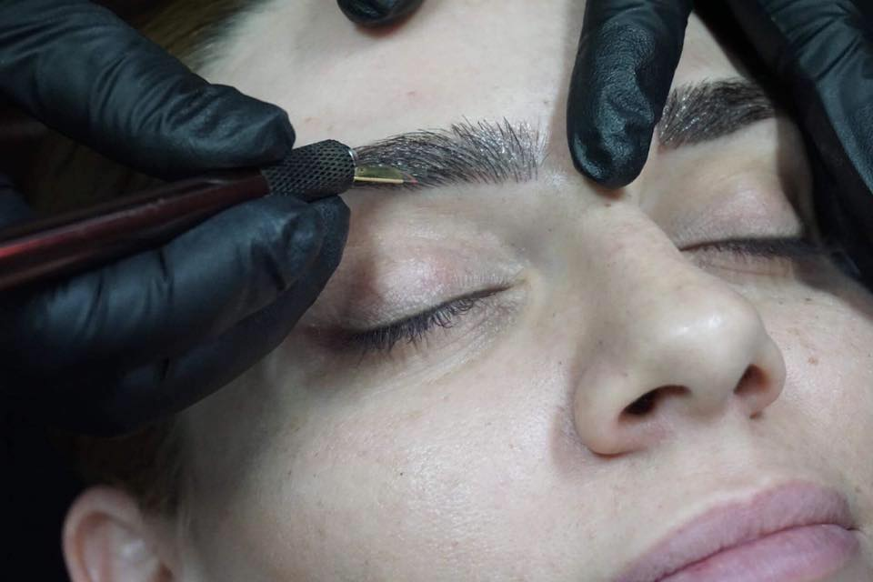

Микроблейдинг: как да постигнем съвършен и естествен вид на веждите си

Микроблейдинг или 3D вежди "косъм по косъм" е японски ръчен метод за рисуване на косми върху зоната на
веждите върху лицето, чрез който получавате естествено изглеждащи вежди, които не се налага да оформятe
и попълвате с молив всеки ден..
Тъй като процедурата се прави на ръка (не се използва машина), се избягват нежеланите груби тъмни линии
и неестествено изглеждащи вежди, които се получават при перманентния грим.
Какво представлява микроблейдингът?
При този метод чрез много фини игли се поставя пигментно вещество в базалната мембрана между епидермиса от дермата.Пигментите,
които се имплантират в кожата, се запазват видими до година и половина, но тяхната дълготрайност зависи от
типа кожа и поддържането на веждите.
За кого е подходящ микроблейдингът?
Ако имате редки вежди, частична липса на косъмчета в тях или не ви харесва формата, която имат, време е да се
поинтересувате за микроблейдинг. Не е подходящ обаче, ако сте с много мазна кожа, имате спукани капиляри
или дерматит.
Болезнена и безопасна ли е процедурата?
По това си прилича и се отличава от татуирането - много по-повърхностно е, което означава, че я няма неприятната
болка. Ако сте чувствителни, при процедурата може да се използва обезболяващ крем. Процедурата използва AC
пигменти (минерални пигменти, които са нетоксични и хипоалергенни).
Какво се случва по време на самата процедура?
• Консултиране относно вашите желания за форма и плътност на вежди; • Дигитално измерване на симетрията,
заснемане;
• Предварително скициране до достигане на 100% удовлетворение на клиента; • Тест напасване на цвета
на пигмента спрямо цвета на вашата кожа/коса; • Щриховането до достигане на перфектен вид; • Процедурата
е почти безболезнена с минимално подуване, но може да причини леко зачервяване на кожата, което обикновено
изчезва след 30 минути;
•След процедурата клиентът може да продължи с ежедневните си дейности, без да се притеснява от дълъг възстановителен период.
• Процедурата отнема 1-2 часа;
Резултат след микроблейдингът
Процесът на възстановяване при всеки човек е строго индивидуален и вследствие на това е възможно частично
избледняване на имплантирания пигмент.
Важно е да се има предвид,че микроблейдингът е двуетапна процедура, при която след ретуша (прави се 4-6
седмици след първата процедура) и пълното заздравяване на кожата се вижда крайният резултат.
Важни препоръки:
Първата седмица не са желателни: - слънчевите бани и солариумът; - изпотяване във фитнеса; - грим в областта
на веждите; Когато си направите процедурата, оставете третираната кожа да заздравее естествено, без да
травмирате мястото поне 7 дни.